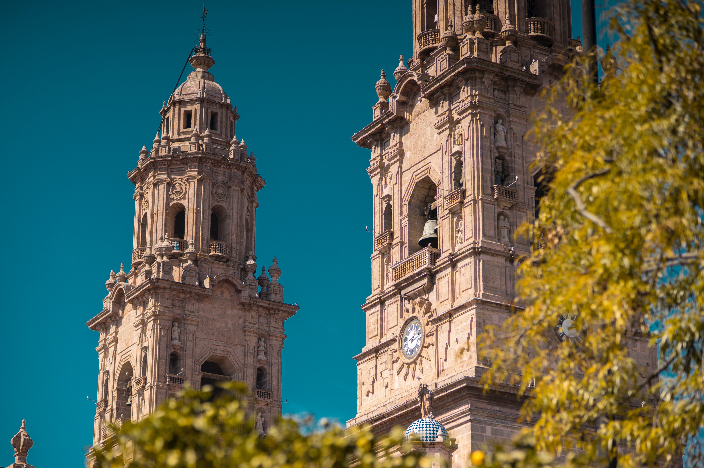
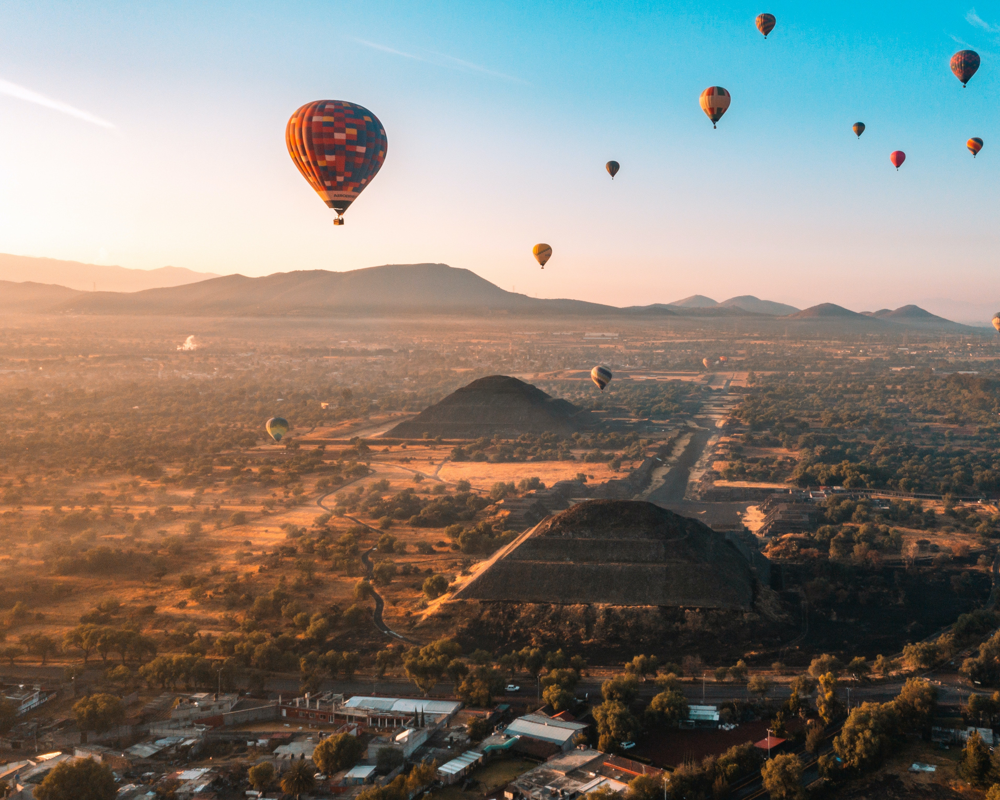
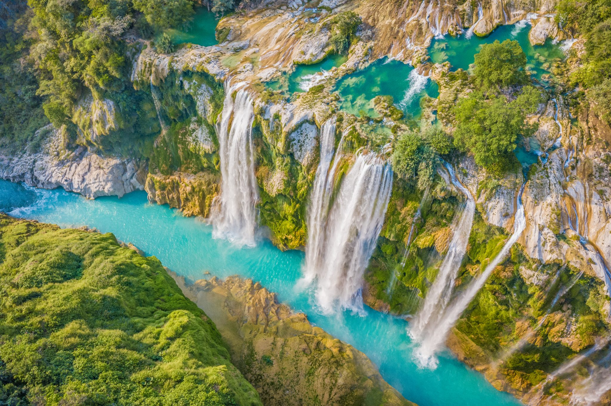
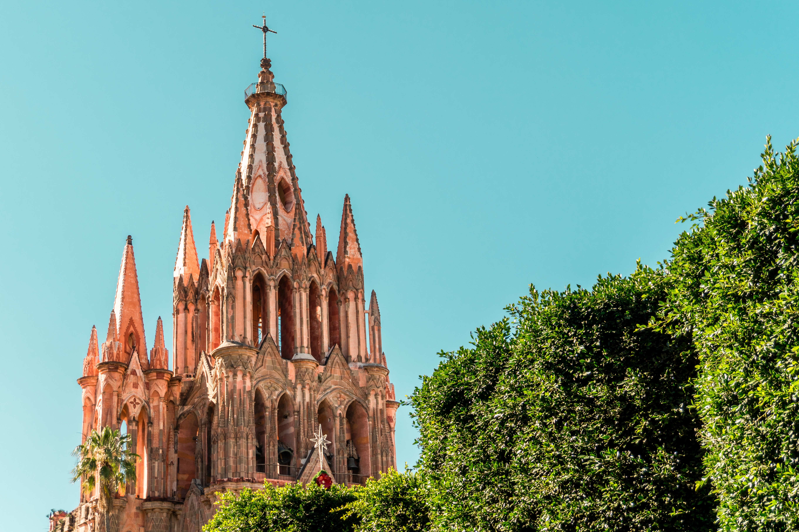

MEXICO TRAVEL GUIDE
Discover the top travel destinations in Mexico with essential tips and insightful blog information
Introduction
Welcome to Mexico, a vibrant and diverse country that offers an incredible array of experiences for travelers. From ancient ruins and rich cultural heritage to stunning beaches and delicious cuisine, Mexico has something for everyone. This travel guide will provide you with essential information to plan an unforgettable trip to Mexico.
Table of Contents
1. General Information
Geography and Climate
Mexico is located in the southern part of North America and is bordered by the United States to the north and Belize and Guatemala to the south. The country boasts diverse landscapes, including stunning coastlines, lush jungles, arid deserts, and towering mountains. The climate varies across regions, with tropical weather along the coasts, a temperate climate in the central highlands, and a desert climate in the northern regions.
Language and Currency
The official language of Mexico is Spanish, but English is widely spoken in popular tourist destinations. The currency is the Mexican Peso (MXN), and credit cards are accepted in most establishments. It's advisable to carry some cash for smaller businesses and local markets.
Safety and Security
Mexico is generally a safe destination, but it's important to exercise caution and be aware of your surroundings. Stick to well-traveled areas, use reputable transportation services, and follow the guidance of local authorities. It's recommended to check the travel advisories issued by your country's government before your trip.
2. Top Destinations
Mexico City
The capital city of Mexico, Mexico City, is a vibrant metropolis filled with history, art, and culture. Don't miss visiting the historic center, where you can explore the iconic Zocalo, visit the impressive Metropolitan Cathedral, and discover the ancient Aztec ruins of Templo Mayor. Other must-visit attractions include the Frida Kahlo Museum, the National Museum of Anthropology, and the colorful canals of Xochimilco.
Cancún and the Riviera Maya
For beautiful beaches and luxurious resorts, head to Cancún and the Riviera Maya on the Yucatán Peninsula. Enjoy crystal-clear waters, white sand beaches, and a lively nightlife scene in Cancún. Nearby, you'll find the ancient Mayan ruins of Tulum and Chichén Itzá, both offering fascinating insights into Mexico's ancient civilizations. Snorkeling and diving in the Great Maya Reef is a must-do activity.
Guanajuato
Guanajuato is a charming colonial city known for its colorful architecture and rich cultural heritage. Explore the narrow cobblestone streets, visit the stunning Juarez Theater, and admire the grandiose Basilica of Our Lady of Guanajuato. Don't miss the Callejón del Beso (Alley of the Kiss), where lovers kiss from balconies across the narrow alley. The nearby town of San Miguel de Allende is also worth a visit for its artistic vibe.
Oaxaca
Oaxaca is a culturally rich city known for its indigenous traditions, vibrant markets, and delicious cuisine. Explore the historic center and visit the impressive Santo Domingo Church and the Oaxaca Regional Museum. Discover the ancient Zapotec ruins of Monte Albán and immerse yourself in the colorful markets of Oaxaca, where you can find exquisite handicrafts and sample traditional dishes like mole and tlayudas.
3. Cultural Experiences
UNESCO World Heritage Sites
Mexico boasts numerous UNESCO World Heritage Sites, reflecting its rich cultural and natural heritage. Some notable sites include Chichen Itza, Palenque, Teotihuacan, and the historic center of Mexico City. Plan your itinerary to include visits to these fascinating sites to delve deeper into Mexico's history and architectural marvels.
Mexican Cuisine
Mexican cuisine is renowned worldwide for its bold flavors and diverse dishes. Indulge in traditional delicacies such as tacos, tamales, enchiladas, and guacamole. Don't miss the opportunity to try regional specialties like mole poblano, cochinita pibil, and ceviche. Visit local markets and street food stalls to savor authentic Mexican flavors.
Day of the Dead
Experience one of Mexico's most iconic cultural events, the Day of the Dead (Día de los Muertos). Celebrated annually on November 1st and 2nd, this festival honors deceased loved ones with vibrant altars, marigold decorations, and traditional food offerings. Oaxaca and Mexico City are particularly known for their elaborate celebrations, featuring parades, music, and dances.
Lucha Libre
Immerse yourself in the colorful world of Mexican wrestling by attending a Lucha Libre match. These entertaining wrestling events combine athleticism, acrobatics, and theatricality. Cheer for the masked luchadores (wrestlers) as they engage in high-flying maneuvers and engage the crowd with their unique personalities. Mexico City's Arena Mexico is the epicenter of Lucha Libre.

4. Outdoor Adventures
Beaches and Coastal Activities
Mexico's coastline offers a plethora of stunning beaches. Whether you choose the Caribbean shores of Cancún, the Pacific beaches of Puerto Vallarta, or the laid-back vibes of Tulum, you'll find sun, sand, and plenty of water activities. Enjoy swimming, snorkeling, diving, and water sports like surfing and paddleboarding.
Hiking and Ecotourism
Nature enthusiasts will be delighted by Mexico's diverse landscapes and opportunities for outdoor adventures. Explore the Copper Canyon in Chihuahua, a vast system of canyons larger and deeper than the Grand Canyon. Hike through the lush jungles of Chiapas and discover the magnificent waterfalls of Agua Azul and Misol-Ha. The Sierra Norte region in Oaxaca offers excellent hiking trails and opportunities for birdwatching.
Scuba Diving and Snorkeling
Mexico is a paradise for underwater enthusiasts. The Great Maya Reef off the coast of the Yucatán Peninsula is the second-largest coral reef system in the world, offering incredible scuba diving and snorkeling experiences. Cozumel, Isla Mujeres, and the cenotes (natural sinkholes) of the Yucatán Peninsula are renowned diving destinations with crystal-clear waters and diverse marine life.
Whale Watching
If you're visiting Mexico between December and April, seize the opportunity to witness the spectacular sight of migrating whales. Baja California, particularly the regions of Los Cabos and Magdalena Bay, is known for its whale-watching tours where you can spot humpback whales, gray whales, and even the majestic blue whales.
5. Practical Information
Visa Requirements
Visa requirements for Mexico vary depending on your nationality. Many countries, including the United States, Canada, the European Union, Australia, and New Zealand, have visa-free entry for tourism purposes. However, it's important to check the visa requirements specific to your country before traveling.
Transportation
Mexico has a well-developed transportation system, with options ranging from domestic flights to buses and trains. Mexico City has an extensive metro system, making it easy to navigate the capital. In tourist areas, taxis and ride-sharing services are widely available. For longer distances, consider comfortable long-distance buses or domestic flights to reach different destinations.
Accommodation Options
Mexico offers a wide range of accommodation options to suit every budget and preference. From luxury resorts and boutique hotels to budget-friendly hostels and vacation rentals, you'll find plenty of choices. In popular tourist destinations, it's advisable to book accommodations in advance, especially during peak seasons.
Health and Safety Tips
Before your trip, consult with a healthcare professional about any recommended vaccinations for Mexico. It's essential to have comprehensive travel insurance that covers medical expenses. Drink bottled water and avoid consuming street food from unhygienic sources to prevent stomach-related issues. Be cautious of your belongings and use hotel safes for valuables.
Local Etiquette
Respect for local customs and traditions is essential when visiting Mexico. Greet people with a friendly "Buenos días" (Good morning), "Buenas tardes" (Good afternoon), or "Buenas noches" (Good evening). When entering churches or temples, dress modestly and avoid wearing revealing clothing. It's customary to tip service providers such as waitstaff, taxi drivers, and tour guides.
POSTS

CHICHEN ITZA MEXICO GUIDE

SUN, SAND, SERENITY: BEACH ESCAPES

FROM AZTECS TO ART: EXPLORING HERITAGE

MEXICO UNVEILED: CULTURE & HISTORY

WILD ADVENTURES: NATURAL BEAUTY OF MEXICO

MAGICAL TOWNS: CHARMING SECRETS